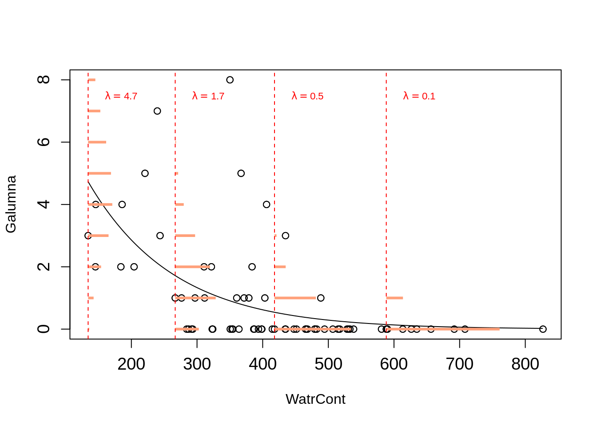

Chapter 7 Binary variables
A common response variable in ecological datasets is the binary variable: we observe a phenomenon \(Y\) or its “absence”. For example, species presence/absence is frequently recorded in ecological monitoring studies. We usually wish to determine whether a species’ presence is affected by some environmental variables. Other examples include the presence/absence of a disease within a wild population, the success/failure to record a specific behaviour, and the survival/death of organisms. Usually, we are interested in questions such as: how do species occurrences vary in function of the environment?
\[Occurrences = f(Environment)\]
Under a linear model, expected values can be out of the [0, 1] range with lm():

7.1 GLM with binomial data: logit link
A regression that has a binary response variable is one of many generalized linear models and is called a logistic regression or a logit model.
A generalized linear model is made of a linear predictor:
\[\underbrace{g(\mu_i)}_{Link~~function} = \underbrace{\beta_0 + \beta_1X_1~+~...~+~\beta_pX_p}_{Linear~component}\] Consider that \(Y_i ∼ B(n_i, p_i)\), and that we want to model the proportions of \(Y_i^{}/n_i\). As such:
\(E(Y_i^{}/n_i) = p_i\) and \(\text{var}(Y_i^{}/n_i) = \frac{1}{n_i}p_i(1-p_i)\) , so that \(V(\mu_i) = \mu_i(1-\mu_i)\).]
We first move the probabilities \(\mu_i\) to the odds:
\[\text{odds}_i = \frac{\mu_i}{1-\mu_i}\]
The odds puts our expected values on a 0 to +Inf scale.
We then take logarithms, calculating the logit or log-odds:
\[\eta_i = \text{logit}(\mu_i) = \log(\frac{\mu_i}{1-\mu_i})\]
with \(\mu\) being the expected values (probability that \(Y = 1\) ), and with the expected values now ranging from -Inf to +Inf.
We can understand that as if event A has probability p of occurring, then the odds of event A occurring is the ratio of the probability that A occurs to the probability that A does not occur: \(p/(1−p)\). For example, if the probability that I will fail my courses is 0.6, the odds that I will fail my courses is \(0.6/(1 − 0.6) = 1.5\). This means that the probability of observing a failure in my courses is 1.5 times greater than the probability of not observing it (that is, \(1.5 × 0.4 = 0.6\)).
In R, presence (or success, survival…) is usually coded as 1 and absence (or failure, death…) as 0. A logistic regression (or any other generalized linear model) is performed with the glm() function. This function is different from the basic lm() as it allows one to specify a statistical distribution other than the normal distribution.
A reminder about our glm() function:
–
| Distribution of \(Y\) | Link function name | Link function | Model | R |
|---|---|---|---|---|
| Normal | Identity | \(g(\mu) = \mu\) | \(\mu = \mathbf{X} \boldsymbol{\beta}\) | gaussian(link="identity") |
| Binomial | Logit | \(g(\mu) = \log\left(\dfrac{\mu}{1-\mu}\right)\) | \(\log\left(\dfrac{\mu}{1-\mu}\right) = \mathbf{X} \boldsymbol{\beta}\) | binomial(link="logit") |
| Poisson | Log | \(g(\mu) = \log(\mu)\) | \(-\mu^{-1} = \mathbf{X} \boldsymbol{\beta}\) | poisson(link="log") |
| Exponential | Negative Inverse | \(g(\mu) = -\mu^{-1}\) | \(\log(\mu) = \mathbf{X} \boldsymbol{\beta}\) | Gamma(link="inverse") |
–
In R, we can therefore build a binomial GLM with a logit link as follows:
7.2 Exercise 1
Let’s build our first generalized linear model! Here, we want to build a logistic regression model using the mites data
## 'data.frame': 70 obs. of 9 variables:
## $ Galumna : int 8 3 1 1 2 1 1 1 2 5 ...
## $ pa : int 1 1 1 1 1 1 1 1 1 1 ...
## $ totalabund: int 140 268 186 286 199 209 162 126 123 166 ...
## $ prop : num 0.05714 0.01119 0.00538 0.0035 0.01005 ...
## $ SubsDens : num 39.2 55 46.1 48.2 23.6 ...
## $ WatrCont : num 350 435 372 360 204 ...
## $ Substrate : chr "Sphagn1" "Litter" "Interface" "Sphagn1" ...
## $ Shrub : chr "Few" "Few" "Few" "Few" ...
## $ Topo : chr "Hummock" "Hummock" "Hummock" "Hummock" ...We can fit the logistic regression model of the presence of Galumna sp. as a function of water content and topography as follows, using the glm() function and the family argument:
To see the model output, we run:
##
## Call:
## glm(formula = pa ~ WatrCont + Topo, family = binomial(link = "logit"),
## data = mites)
##
## Deviance Residuals:
## Min 1Q Median 3Q Max
## -2.0387 -0.5589 -0.1594 0.4112 2.0252
##
## Coefficients:
## Estimate Std. Error z value Pr(>|z|)
## (Intercept) 4.464402 1.670622 2.672 0.007533 **
## WatrCont -0.015813 0.004535 -3.487 0.000489 ***
## TopoHummock 2.090757 0.735348 2.843 0.004466 **
## ---
## Signif. codes: 0 '***' 0.001 '**' 0.01 '*' 0.05 '.' 0.1 ' ' 1
##
## (Dispersion parameter for binomial family taken to be 1)
##
## Null deviance: 91.246 on 69 degrees of freedom
## Residual deviance: 48.762 on 67 degrees of freedom
## AIC: 54.762
##
## Number of Fisher Scoring iterations: 6Doesn’t this structure resembles the one from summary.lm()? IT does, right? However you might notice that there are some special differences (e.g. dispersion parameter) we will discuss further in this book!
7.3 Challenge 1
Using the bacteria dataset (from the MASS package), model the
presence of H. influenzae as a function of treatment and week of test.
Start with a full model and reduce it to the most parsimonious model.
Load the MASS package and the bacteria dataset:
## 'data.frame': 220 obs. of 6 variables:
## $ y : Factor w/ 2 levels "n","y": 2 2 2 2 2 2 1 2 2 2 ...
## $ ap : Factor w/ 2 levels "a","p": 2 2 2 2 1 1 1 1 1 1 ...
## $ hilo: Factor w/ 2 levels "hi","lo": 1 1 1 1 1 1 1 1 2 2 ...
## $ week: int 0 2 4 11 0 2 6 11 0 2 ...
## $ ID : Factor w/ 50 levels "X01","X02","X03",..: 1 1 1 1 2 2 2 2 3 3 ...
## $ trt : Factor w/ 3 levels "placebo","drug",..: 1 1 1 1 3 3 3 3 2 2 ...This dataset was made to test the presence of the bacteria H. influenzae in children with otitis media in the Northern Territory of Australia. Dr A. Leach tested the effects of a drug on 50 children with a history of otitis media in the Northern Territory of Australia. The children were randomized to the drug or a placebo. The presence of H. influenzae was checked at weeks 0, 2, 4, 6 and 11: 30 of the checks were missing and are not included in this data frame.
7.3.1 Challenge 1: Solution
model.bact1 <- glm(y ~ trt * week, data = bacteria, family = binomial)
model.bact2 <- glm(y ~ trt + week, data = bacteria, family = binomial)
model.bact3 <- glm(y ~ week, data = bacteria, family = binomial)
# Let's compare these models using a likelihood ratio test (LRT).
anova(model.bact1, model.bact2, model.bact3, test = "LRT")## Analysis of Deviance Table
##
## Model 1: y ~ trt * week
## Model 2: y ~ trt + week
## Model 3: y ~ week
## Resid. Df Resid. Dev Df Deviance Pr(>Chi)
## 1 214 203.12
## 2 216 203.81 -2 -0.6854 0.70984
## 3 218 210.91 -2 -7.1026 0.02869 *
## ---
## Signif. codes: 0 '***' 0.001 '**' 0.01 '*' 0.05 '.' 0.1 ' ' 1Based on these results, we select model #2 as the best candidate to model these data.